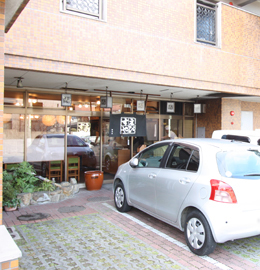
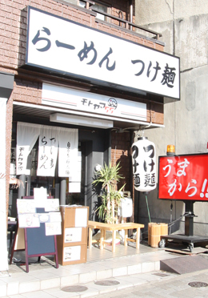
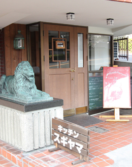
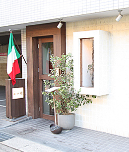
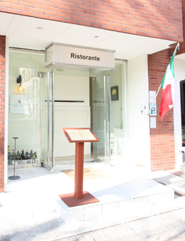
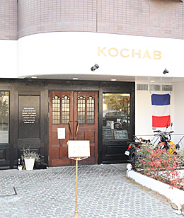

名古屋市千種区を中心に、マンション・土地・新築・中古一戸建など
豊富な不動産物件情報を掲載しています。不動産の査定もお気軽にご相談下さい。


-
大きなエビがうれしい、平麺のうどん、そば屋さん。
レトロな雰囲気が落ち着いた印象の店内は、食べながら麺打ち場を見る事が出来ます。
お値段もお手頃で、味も間違いなので、いつも多くの人で賑わう人気店です。
えびすや（うどん）
●TEL 052-782-4187
●愛知県名古屋市千種区猫洞通三丁目29番地
●営業時間／11:00〜21:00
●定休日／水曜日
-

-
新鮮な美味しいネタしか出さない、という店主のこだわりを感じるお店です。
高級鮨店らしく何を食べても味は絶品！
一度は行ってみたいお店です。
おけい鮨分店本山（寿司）
●TEL 052-782-7113
●愛知県名古屋市千種区猫洞通3-29

-
素朴な味が魅力のケーキ屋さん。
ケーキは一口サイズですがお値段がリーズナブルなので、満足度は満点！
生地の歯ごたえがよく、癖になる食感は忘れられません。
おすすめはチーズケーキですが、何を食べても美味しい、と評判のお店。
LaLa House （洋菓子・チーズケーキ）
●TEL 052-757-8880
●愛知県名古屋市千種区末盛通5-3 メディカルビル １Ｆ
●営業時間／10:00〜20:00
●定休日／火曜日

-
つけ麺が美味しい有名店。
ほかにも、野菜が乗った味噌ラーメンの「旨みそソバ」や、更に麻婆豆腐をかけた「旨からソバ」なんてメニュも。
ウェーブのかかった平打ち太麺がスープとよく絡み、しっかりとした味付けは、繰り返し食べたくなる魅力があります。
ラーメンつけ麺モトヤマ５５（ラーメン）
●TEL 052-782-8700
●愛知県名古屋市千種区東山通１-18 グランドスタービル1F
●営業時間／
［水〜土］11:30〜15:00 17:00〜23:30
［日月火］11:30〜15:00 17:00〜22:30
●定休日／無
-

-
人気のオムライス専門店。
オムライスのメニューは実に80種類以上！
全般的にボリュームがあり、お腹いっぱいになります。
ガッツリ食べられるため、若者に人気で、カジュアルな店内も、とてもよい雰囲気をかもし出しています。
フォーユー（洋食・オムライス）
●TEL 052-764-2584
●愛知県名古屋市千種区末盛通5-1
●営業時間／11:00〜15:00 17:00〜23:00(ラストオーダー各30分前)
●定休日／第３火曜日

-
おすすめは何といってもクリームコロッケ。
アットホームな感じで、気軽にふらっと行けるお店です。
キッチン スギヤマ（洋食）
●TEL 052-782-7315
●愛知県名古屋市千種区猫洞通2-1-1
●営業時間／11:30〜14:00(ラストオーダー13:30) 17:00〜22:00(ラストオーダー21:30)
●定休日／火曜・第３月曜（祝日の場合は営業）
-

-
レベルの高い創作イタリア料理が楽しめるお店です。
ひとつひとつの料理に工夫がこらしてあり、コース料理は次に何が出てくるのか楽しみになります。
味は申し分のないレベルの美味しさです。
Piatto stagionale かわ村 （イタリアン）
●TEL 052-781-8222
●愛知県名古屋市千種区猫洞通4-34 ベルグレイＫＩ １Ｆ
●営業時間／11:30〜14:00(ラストオーダー) 18:00〜21:00(ラストオーダー)
●定休日／水曜日
-

-
フレンチの経験もあるシェフが作る、美味しいイタリア料理店。
店員さんの感じもよく、料理の説明もスマートで解りやすかったです。
料理は素材の味をしっかり生かして、工夫を凝らしている感じが伺えます。常に新しいメニューを創作しているようで、これからも火曜のが楽しみなお店です。
Reggio nell’Emilia（レッジョ・ネレミリア／イタリアン）
●TEL 052-757-3660
●愛知県名古屋市千種区猫洞通3-11 メゾン猫洞 １Ｆ
●営業時間／11:30〜14:00 18:00〜22:00(ラストオーダー20:30)
●定休日／水曜・第１木曜・年末年始
-

-
手羽先で有名な風来坊。
もちろん居酒屋さんなので、他の料理や飲み物も充実。
みんなで行くのもヨシ、一人で行くのもヨシ。
おすすめのお店です。
風来坊本山店（居酒屋）
●TEL 052-751-3339
●愛知県名古屋市千種区本山町4-69 アビタシオン本山 １Ｆ
●営業時間／17:00〜24:00
●定休日／月曜日

-
カフェと呼ぶよりも、珈琲店、という呼び方がぴったりなお店。
粋な感じの店内は一人でふらりと出かけても居心地がよく、珈琲の味はもちろん本物を感じる美味しさ。
西原珈琲店 本山本店（カフェ）
●TEL 052-781-4826
●愛知県名古屋市千種区四谷通1-8 ラフォーレ四谷 ３Ｆ
●営業時間／10:00〜22:00
●定休日／無休
-
お店の中に小さな図書館スペースのような場所があり、ゆっくりと読書を楽しめるようになっているようです。
また、グランドピアノが店内に置いてあり、たまに演奏会も開かれるとか。
落ち着いた感じが魅力のお洒落なカフェです。
SAKURA CAFÉ（カフェ）
●TEL 052-789-1110
●愛知県名古屋市千種区橋本町1-64 アーバイン本山ビル
●営業時間／[月〜金]10:00〜18:00 [土]10:00〜20:30
●定休日／日曜日

-
本格的なフレンチが味わえるお店。
たっぷり食べられるので割安感もあり、飾らない店内の雰囲気も良い印象でした。
KOCHAB_FRENCH（コカブ フレンチ／フレンチ）
●TEL 052-782-5626
●愛知県名古屋市千種区四谷通3-8 ハウスソヨカゼ １F
●営業時間／11：30〜14：30（ラストオーダー） 18：00〜21：30（ラストオーダー）
●定休日／毎週月曜日（祝月の場合は火曜日）
-
